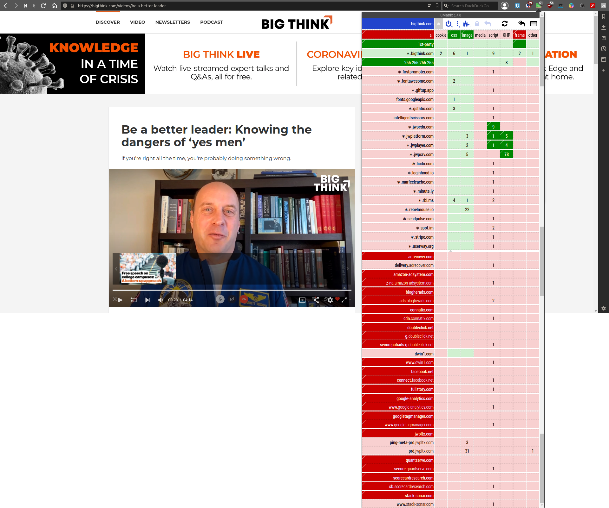

The Web has become infested with tools for advertising. Let's just call it what it is: sheer manipulation—evil (1). By means of your and everyone else's data, accurate predictions are made about human behavior. Armed with such data, agencies are able to make you want things that you don't need by applying the right personally tailored stimuli. The Web has also become downright unpleasant to use. Fortunately you can set up impenetrable defenses; right after the following anti-commercial break.
Take a look at bigthink.com, a seemingly respectable website featuring a video with genuine advice from an astronaut: https://bigthink.com/videos/be-a-better-leader.
Tread carefully though, because it has 14 scripts from blacklisted sites executing code on your device by default. These scripts' sole purposes are tracking and consumer manipulation. Hence why these domains blacklisted by default and shown in dark red. They are completely unnecessary for the website to function properly. Moreover, they decrease speed, increase bandwidth usage, and use more power. Take notice that there are non-blacklisted domains that run scripts by default as well; 15 of them. Unless you're adamant on reading comments or seeing superfluous annoying elements on the site, these can also be left disabled. That's 29 good-for-nothing scripts; “Take it, take it all, you fools!” I got to give it to them though, the audacity is undeniable.
Conversely, shown in dark green are the only additional domains that need to be enabled in order for the video to play on an otherwise usable website with every other domain being blocked besides bigthink.com itself.
Set DuckDuckGo as your default search engine. Its search results are not politically nor commercially biased (2), as opposed to Google. Granted, it's a drag to type the full address, but fortunately—now that the hostage situation by Google is resolved (3)—one can just “Duck it” with duck.com.
Additionally, the software and extensions below should enable every layman to reduce their intrusive and unpleasant web experiences to zero, provided a willingness to learn, and a pinch of experience (e.g. some websites' functionalities can be disabled without you realizing it).
On a PC.
On Android. (4)
No.
“About blocking ads: It's important to note that blocking ads is NOT theft. Don't fall for this creepy idea, which is the criminalisation of the inalienable right to privacy. Ads and trackers violate our privacy, make websites much slower, and deliver dangerous malware. We say no to them. We have the right to decide what we download from the Internet, what we send to it, and what we display on our screen. We have the right to refuse downloading source code that works against us. It's our bandwidth and computer, and no-one can decide for us what to use them for. A service that has valuable features should be able to sell us a subscription, without blackmailing us with ominous ads.”
Quoted from https://lichess.org/ads; from which I got some of the recommendations above. By the way, lichess is completely free, devoid of any ads and trackers, financed by its users. A prime example of how the World Wide Web could be, and should be.
There you have it: a list of proverbial Trojan condoms against literal Trojan horses. Have fun taking agency of your Web experience again.
---
PS On https://www.quitfacebook.org/file/setup.html you can see all the noteworthy software I use and recommend.